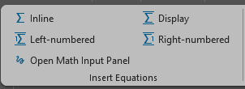
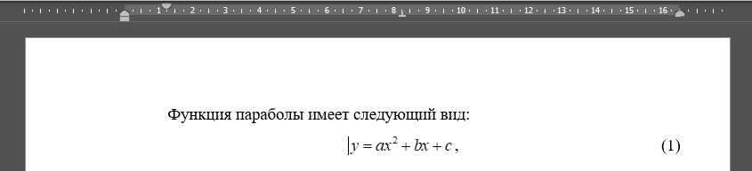

Оформляем тексты в MS Word#
Вкратце рассмотрим, как автоматизировать работу в MS Word и делать в нём качественные текстовые документы.
Под качественным текстовым документов будем подразумевать работу без стилевых ошибок (прыгающие абзацы, разные шрифты и т.д.), без ошибок в оформлении (вид титульной страницы, нумерация страниц, подписи рисунков и таблиц и т.д.), с грамотным изложением результатов той или иной работы.
Шаблоны для оформления студенческих работ в Word вы найдёте здесь.
Что за шаблоны и зачем они нужны?#
Шаблон Word - это файл, на основе которого можно создать новый документ.
Шаблон хранит в себе настроенные стили основного текста, заголовков,
подписей рисунков и таблиц и т.д.
Современный формат файла Word - .docx, а шаблона - .dotx.
Пользовательские шаблоны Word по умолчанию хранятся по пути
C:\<User>\Документы\Настраиваемые шаблоны Office\<template>.dotx.
При запуске Word просматривает эту директорию,
поэтому вы можете увидеть все свои шаблоны в самом Word:
Note
Чтобы у вас появились шаблоны homework и lab, как на картинке выше,
вы должны скачать их по ссылке и переместить
в указанную папку шаблонов Word.
Нажав на соответствующий шаблон вы создадите docx-файл,
оформленный по выбранному шаблону.

Как видите из скриншота выше, в новом файле уже есть титульная страница. Также есть страница с содержанием работы и пустая страница с заголовками разделов домашнего задания. Стили заголовков, основного текста и т.д. тоже уже настроены (см. скриншот ниже):
Вам остаётся лишь заполнить титульный лист, удалить или оставить содержание (в зависимости от объёма отчёта) и написать сам отчёт.
Оформляем формулы в Word#
Здесь рассмотрим способы написания математических выражений в MS Word, “фишки” распространённых формульных редакторов, а также основные требования к оформлению технических (и математических) текстов, с которыми вы обязательно столкнётесь.
Используем встроенный редактор#
Important
Согласно требованиям МГТУ шрифт в формулах должен совпадать со шрифтом основного текста. Встроенный редактор Word не может это обеспечить. Этого недостатка лишён редактор MathType.
В связи с замечанием, сделанном выше, оформление текстовых работ с использованием встроенного редактора формул бессмысленно с точки зрения удовлетворения требованиям МГТУ (и подавляющего большинства издательств). Однако встроенный редактор вполне можно использовать в презентациях. Поэтому всё же покажем некоторые его “фишки”, которые помогают немного ускорить набор формул.
Самое главная “фишка” - поддержка синтаксиса и команд \(\mathrm{\LaTeX}\).
Например, не стоит тратить время на поиск греческих символов в таблице.
Вместо этого достаточно ввести её название в самой формуле,
начиная с символа обратного слэша \<command>: \alpha.
Команда сработает после нажатия пробела:
до нажатия пробела:
и после:
Также, как в латехе, работает вставка нижних и верхних индексов (с нажатием пробела):
до:
после:
С помощью пробела можно вставить дробь (/ + пробел),
растягивающиеся скобки любой формы (() + пробел, [] + пробел и т.д.).
Работают и такие команды латеха, как \mathbb{R}
(отобразится \(\mathbb{R}\)).
Как только погрузитесь в оформление разнообразных отчётов, вы быстро освоите и синтаксис формул и часто используемые команды.
Используем MathType#
MathType - это коммерческая программа оформления формул с многофункциональной надстройкой для Word:

Раскрыв надстройку, вы увидите:
В разделе “Insert Equations” расположены кнопки вставки уравнений:

“Inline” - вставка формулы посреди основного текста (встраивание формулы в предложение);
“Display” - вставка центрированной формулы;
“Left-numbered” и “Right-numbered” - то же, что и “Display”, но с номером формулы слева или справа соответственно.
Для вставки встроенной формулы можно использовать комбинацию клавиш
Ctrl+Alt+Q, а для вставки центрированной формулы
Ctrl+Q.
При этом откроется окно редактора:
Верхняя панель содержит функции MathType.
Однако каждая команда имеет собственное сочетание клавиш
для своего вызова.
Вы можете узнать эти сочетания,
наводя указатель на интересующую команду
и смотря в нижний левый угол окна редактора.
Например, сочетание для вставки полноразмерной дроби
Ctrl+F.
В разделе “Symbols” расположены различные символы, не представленные на клавиатуре, например, греческие:
Эти же символы можно найти в стандартной вкладке “Вставка”.
Далее рассмотрим раздел “Equation Numbers”:
“Insert Number” - вставить номер формулы;
“Insert Reference” - вставить ссылку на формулу;
“Chapters & Sections” - вставка разделов. Это нужно в случае, если формулы нумеруются с учётом номера раздела. Например, вторая формула в первом разделе имеет номер (1.1). Возможны и более сложные случаи.
Опустим остальные разделы, кроме “Format”:
Его предназначение в том, чтобы настроить стиль формул, шрифты и т.д., а также в том, чтобы отформатировать все уравнения в документе, если настройки оформления были изменены.
Пример#
Напишем следующий текст:

После двоеточия нажмите Alt+Q.
Откроется окно редактора.
Введите формулу.
Обратите внимание, что шрифт по
умолчанию Times New Roman.

Для завершения редактирования просто закройте редактор.
Установив каретку в любом месте строки с формулой. Заметьте, что на горизонтальной линейке установлены знаки табуляции (это сделал MathType автоматически):
Справа от формулы вы могли заметить её номер.
Для этого перейдите на строку с
формулой в место за ней.
Нажмите Tab - каретка переместится к
следующему (крайне правому) знаку табуляции.
Затем на вкладке MathType в разделе
“Equation Numbers” нажмите
“Insert Number”.
Раскроется “шторка” с двумя командами:
“Insert” и “Format”.
Для начала стоит определить формат номера.
В данном случае снята галочка с “Section Number”:
Затем, нажмите “Ок”. Теперь вставьте номер командой “Insert”.
Чтобы вставить ссылку на формулу в тексте, нажмите “Insert Reference”. Появится место для вставки, как на рисунке ниже:
Чтобы в указанном месте появился номер уравнения, просто дважды щёлкните на её номере. Результат:
Note
Номера формул и ссылки на них обновляются автоматически.
Important
Основным недостатком MS Word и многих программ, связанных с ним, является то, что их лицензии стоят денег. \(\mathrm{\LaTeX}\) свободен и бесплатен.
Таковы основы работы с MathType.
См. также#
Шаблоны Word для студенческих работ.